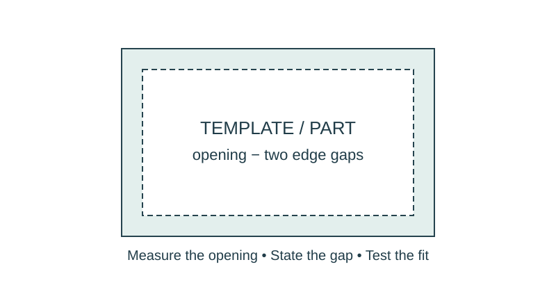

Job 35 · Prototype and inspect
A tested model or full-size layout with a signed inspection record.
110 minutes • Tape measure + pocket notebook • Name: __________________ Date: __________
Materials: Approved drawings, paper/folder supplies, tape/scissors; additional materials only if arranged.

Brief · 12 min
- Which acceptance test would reveal the most serious failure before you spend time on finishing?
- Set up a dated notebook spread: sketch and readings on the left; calculation, decision, test, and revision on the right. Mark small sketches NTS unless drawn to a chosen scale.
- Work in pairs and rotate roles. Each student keeps an individual notebook and performs a tool action and a calculation.
Measure · 18 min
- Review the current brief and select at least three tests: fit, position, load path, access, or operation.
- Write a method and pass criterion for each test before building.
- Mark which model features represent real scale and which are simplified.
Plan · 20 min
- Prepare a build sequence and divide roles so every student fabricates or lays out part of the model.
- Predict one weak point and choose how it will be inspected.
- Calculate any final allowance or material change before cutting.
Worked example
A model must fit a 24-in zone with 1/2-in clearance at both ends. Find maximum outside width. Maximum width = available width − both clearances. 23 in. This is outside width; interior clear size also depends on material thickness.
Make · 28 min
- Build from the current package and keep an issue log.
- Run each planned acceptance test; record readings, observations, and pass/revise decisions.
- Make one evidence-based revision, or retain a successful dimension with a documented check, then retest.
Test · 20 min
- All planned tests have evidence or are explicitly marked not yet performed.
- Revised model and drawings match.
- Group success is accompanied by each student’s own calculation and practical contribution.
Explain · 12 min
- Complete the individual exit below before discussing answers.
- Add the test result, revision, and notebook page reference to your response. Use the notebook as evidence rather than retyping every page.
- Save the three selected responses and submit the lesson for teacher review. Show your physical work and notebook to the teacher. Clean up and return shared supplies.
Individual exit
A 30-in zone needs 3/4-in clearance at each end. Find maximum outside width. Explain one test result from your model and what it caused you to change or retain.